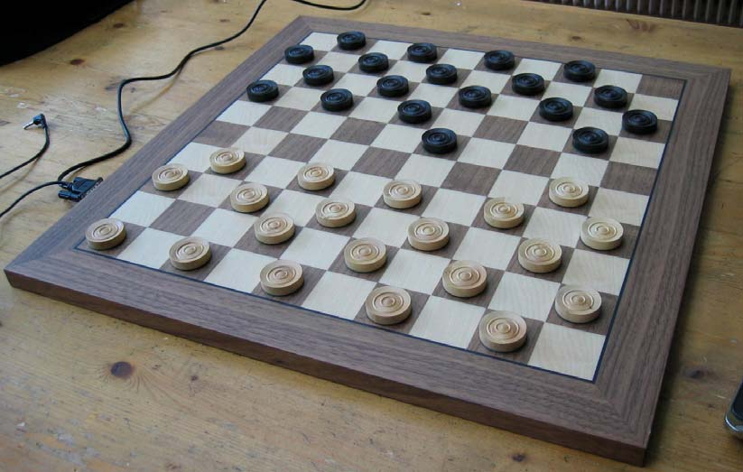
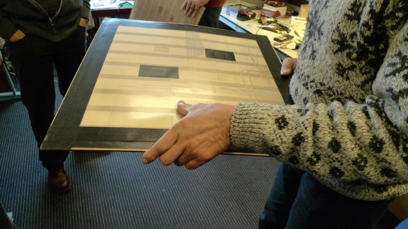
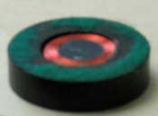
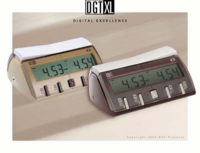
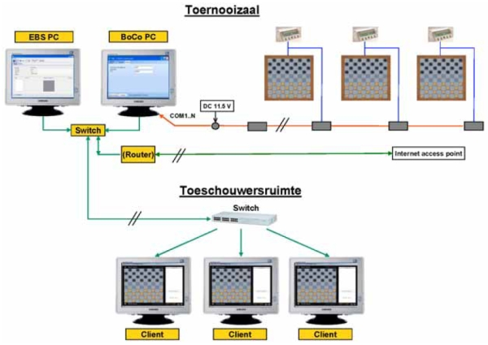
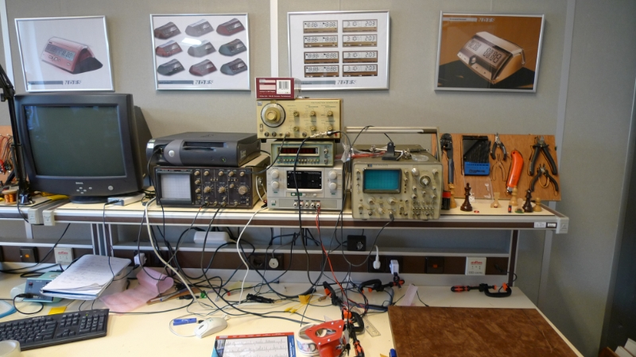

Elektronische Borden
De elektronische borden zorgen in de toeschouwerszaal en op het internet voor live presentaties van alle partijen.
Paul van de Veen heeft de elektronische damborden in samenwerking met de KNDB en DGT Projects ontwikkeld. De borden zijn inmiddels te koop, meer informatie hierover kan verkregen worden bij Dit e-mailadres is beschermd tegen spambots. U heeft Javascript nodig om het te kunnen zien. .
Het systeem neemt waar wat er op het bord gebeurt en verstuurt de informatie. Het systeem vervangt niet de arbiter, het is alleen een registratiesysteem. Zo worden er door het systeem bijvoorbeeld geen consequenties verbonden als de verkeerde klok loopt. Of spelers hun klok hebben ingedrukt of niet is onderdeel van het wedstrijdspel. Hetzelfde geldt voor alle gebeurtenissen op het bord. Onreglementaire zetten zoals verkeerd slaan worden immers onderdeel van het spelverloop als de tegenstander met een tegenzet reageert. Het systeem geeft ongeacht of het reglementair is of niet ten alle tijde de actuele stand op de monitoren en op de applet.
Het systeem reconstrueert uit de gebeurtenissen op het bord notatie in PDN formaat. Maar in de weergave is de positie steeds leidend en de notatie is slechts toegevoegd commentaar. Het voordeel is een grote robuustheid. Schijven die in tijdnood uit de hand vallen en over het bord rollen, onreglementaire zetten, bordfouten, onjuist gebruik van de klok, steeds blijft de weergave overeenstemmen met de werkelijke bordpositie.
Het systeem bestaat uit een PC met software, elektronische damborden met 40 geprepareerde schijven en DGT XL klokken. Daarnaast zijn er een tiental Client PC’s met monitoren die via een draadloos netwerk in de toeschouwersruimte de partijen weergeven met behulp van het programma Tournament_Client.
Borden:
Het principe is dat er onder elk veld een zend en ontvangst spoel aanwezig is. In de schijven bevindt zich een kleine spoel, ferrietkern en condensator. Tezamen vormt dit een resonator die de overdracht tussen zend en ontvangstspoel kenmerkend beïnvloedt afhankelijk van de resonantiewaarde.
Zo wordt de aanwezigheid van een schijf op een veld gedetecteerd. Twee schijven op elkaar worden ook eenduidig gedetecteerd. Het kronen van een schijf tot dam kan dus op dezelfde wijze als reglementair is vastgelegd.
De 50 donkere velden van het bord worden elke 100 msec. achtereenvolgens nagegaan. De elektronica en embedded software is voorbereid op het aflopen van alle 100 velden. Er is gekozen voor snelheid; alleen de 50 donkere velden worden momenteel gescand.
Alle bord-events worden in het bordgeheugen opgeslagen zolang het bord op de voeding is aangesloten. Het interne geheugen is groot genoeg om volledige partijen intern op te slaan. Schijven die neerkomen kunnen nog wel eens ‘natrillen’. De embedded software kent filtering op ‘stabiele
bordsituaties’.
Vanwege het scannende principe is het denkbaar dat van een zeer snel verplaatste schijf eerst de aankomst op een bepaald veld wordt gezien en pas daarna het vertrek. De embedded software is voorzien van een speciaal filter dat zulke verwisselingen in aankomst en vertrek signaleert en corrigeert.
Twee schijven worden als dam gedetecteerd. Bij het wegnemen van schijven na een meerslag ziet het bord tijdelijk dammen. De gebruikelijke manier van wegnemen genereert ook daadwerkelijk heel even dammen op het bord. Er is filtering ingebouwd zodat promotie van schijf tot dam alleen mogelijk is op de promotievelden.
Bekabeling:
De borden worden aangesloten op een buslijn die als een aorta door de toernooizaal loopt. Er zijn onvertakte en vertakte configuraties toegestaan. Hier een voorbeeld van een vertakte configuratie.
Klokken:
Alleen de DGT XL klok kan op de borden worden aangesloten. Zowel op de Clients als op de Live applet wordt de actuele tijd van de klok weergegeven. Ook wordt weergegeven wiens klok loopt. Maar het systeem functioneert ook zonder klok. Uiteraard kan dan geen tijd worden weergegeven op de displays.
Tournament_Server:
Op Tournament_Server kunnen maximaal 96 elektronische borden worden aangesloten. Er zijn er op dit moment 15 borden vervaardigd.
In het programma kunnen toernooien, spelers, rondes en borden worden gedefinieerd. Daarnaast kunnen bitmaps zoals spelersfoto’s, afbeeldingen en logo’s aan partijen gekoppeld worden. Voor elke partij kan gekozen worden uit een Game mode en een Demo mode. De laatste voor
demonstraties mbv beamers of een grootbeeldmonitoren. Aan de internetverbinding worden geen speciale eisen gesteld. Het uploaden van 10 partijen duurt via een normale ADSL verbinding voor 10 partijen ca. 2.5 sec. Aan de hosting kant dienen wel de nodige voorzorgen genomen te worden voor wat betreft afstemming tussen mogelijke en te verwachten datastroom.
Tournament_Client:
De Clients doen niets meer dan elke seconde nieuwe informatie op te halen van de server en weer te geven. Dat kan in Single-Game mode en Roulation_mode waarin naar keuze meerdere partijen achtereenvolgens worden weergegeven. De Clients krijgen hun informatie via een dedicated draadloos netwerk. Er lopen geen storende kabels door de toeschouwersruimte.
Internet Applet:
Tournament_Server stuurt bij elke upload een gecomprimeerd bestand naar een bepaalde website. De door Huub van de Wetering en Wieger Wesselink geschreven Java applet geeft deze informatie op de site weer. Deze applet heeft de mogelijkheid van een beeldvullende weergave.
Oerterp applet
Tournament_Server stuurt bij elke upload een gecomprimeerd bestand naar een bepaalde website. De door
Dit e-mailadres is beschermd tegen spambots. U heeft Javascript nodig om het te kunnen zien.
a geschreven Javascript applet geeft deze informatie op de site weer. Deze applet heeft in tegenstelling tot de Internet Applet geen java nodig en is daamee ook via bedrijfsnetwerken en mobiele apparaten te openen. De applet is PDN 2.0 compatible. Bij het WK2011 is deze vernieuwde Oerterp applet gebruikt in combinatie met realtime analyses van computerprogramma's en waren de gegenereerde varianten af te spelen via de applet. Ook konden toeschouwers zelf varianten invoeren via de applet. Andere functionaliteiten van de Oerterp applet zijn: Tonen van zetnotatie, tonen van PDN2.0 notatie, met aanklikbare varianten en commentaar, tonen van foto's van de spelers welke aanklikbaar zijn met koppeling naar spelerinformatie vanuit toernooibase, draaien van bord, inladen en afspelen van PDN2.0/zetnotatie en een slider om door een partij te "sliden", vergroten/verkleinen van bord, maximaliseren/minimaliseren bord, sluiten van bord en verslepen van het bord over de webpagina. Verder kunnen er veldnummers getoond worden langs de randen van het bord en bevat het bord een fraaie zetanimatie welke de schijven/dammen over het bord doet glijden. Bij livepartijen lopen de kloktijden in de applet automatisch voor de speler aan zet, en synchroniseert deze met de werkelijke kloktijden van de elektronische klok.
Zie ook dit artikel voor meer informatie.
Meetapparatuur van DGT-Projects